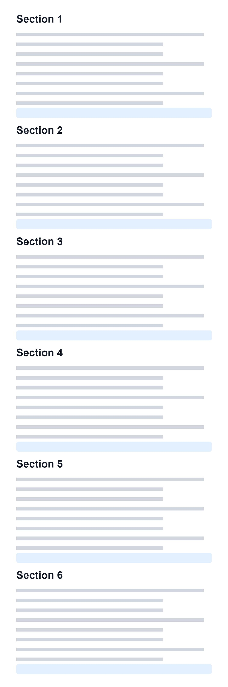

show-me 샘플 덱 · 10분
실물로 보여 주는
슬라이드
보여 주고
→
설명한다
←
→
넘기기 ·
G
전체 보기 ·
F
전체 화면 ·
T
타이머 ·
1–9
탭/장면 ·
P
재생 ·
Z
확대
테스트 녹화 · 6초 · 세 장면
녹화는
장으로 나눠
필요한 곳만 튼다
숫자 키 1–3으로 장을 고른다
오른쪽 목록을 눌러도 된다
P로 멈추고, Z로 확대한다
media/phone.mp4 ← sources/phone_raw.mov (HEVC 60fps → H.264 30fps)
긴 문서 캡처 · 1100×3300
긴 문서는
줄이지 않고
스크롤한다
끌어서 스크롤, 더블클릭하면 크게
탭 2에는 영상의 포스터 한 장
1
문서
2
포스터
sample-document
확대

스크롤·드래그 · 더블클릭 크게
opening_poster.jpg
16:9 영상 · 9초 · 자동 재생
들어오면
바로 재생되는
영상
오프닝 영상처럼 처음부터 틀 때
떠나면 멈추고, 돌아오면 이어서 튼다
scenes.js · ShowMe.scene
들어올 때마다
다시 그리는
도식
보이지 않는 과정은 도식으로 그린다
예: 여러 일이 동시에 끝나는 순서
이 동작은 엔진이 아니라 이 덱의 scenes.js에 있다
다시 보기
data-goto
카드를 누르면 그 장으로 갑니다
2장
휴대폰 녹화
3장
문서 캡처
4장
가로 영상
정리
보여 주고
,
짧게 설명하고,
확인은 사람이